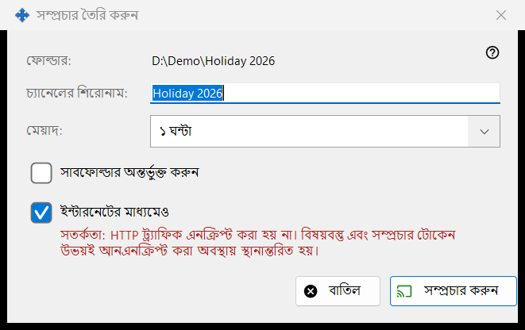
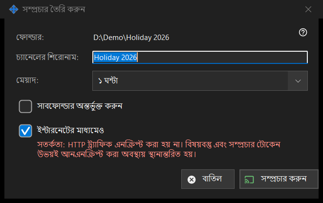

সম্প্রচার তৈরি করুন
এটি কীসের জন্য
একটি সম্প্রচার তৈরির আগে তা ঠিক করে: তার শিরোনাম, কতক্ষণ থাকবে এবং সেটি স্থানীয় নেটওয়ার্কের বাইরে পৌঁছাবে কি না। নির্বাচিত ফাইল বা ফোল্ডারের জন্য এটি সম্প্রচার উইন্ডোর সম্প্রচার তৈরি করুন.. থেকে খোলে। আপনি সম্প্রচার করুন না চাপা পর্যন্ত কিছু তৈরি বা পাঠানো হয় না।


এই ক্রমে
- প্রথম লাইনে পথটি দেখে নিন (ফোল্ডার: বা ফাইল:)।
- চ্যানেলের শিরোনাম: সম্পাদনা করুন; এটি ফোল্ডার বা ফাইলের নাম দিয়ে শুরু হয়।
- মেয়াদ: বেছে নিন।
- ফোল্ডারের জন্য সাবফোল্ডার লাগলে সাবফোল্ডার অন্তর্ভুক্ত করুন-এ টিক দিন।
- ইন্টারনেটের মাধ্যমেও রাখুন বা সরিয়ে দিন।
- সম্প্রচার করুন (Enter) বা বাতিল (Escape) চাপুন।
উপাদানসমূহ
শিরোনাম ও মেয়াদ
চ্যানেলের শিরোনাম সম্প্রচার তালিকায় দেখানো নাম। মেয়াদে 24 ঘণ্টা (ডিফল্ট), 1 ঘণ্টা, 7 দিন এবং প্রত্যাহার না হওয়া পর্যন্ত বেছে নেওয়া যায়; শেষোক্তটির কোনো শেষ তারিখ নেই এবং আপনি সম্প্রচার উইন্ডোতে প্রত্যাহার না করা পর্যন্ত সেটি থাকে।
সাবফোল্ডার অন্তর্ভুক্ত করুন
শুধু লক্ষ্য ফোল্ডার হলে দেখায়, এবং ডিফল্টভাবে বন্ধ থাকে। সম্প্রচার করা ফোল্ডারের সাবফোল্ডারের ফাইলগুলো অন্তর্ভুক্ত হবে কি না তা এটি ঠিক করে।
ইন্টারনেটের মাধ্যমেও
শেয়ারিং সেটিংস রপ্তানি শুধু স্থানীয় নেটওয়ার্কে সীমিত না রাখলে এতে টিক দেওয়া থাকে। টিক থাকলে লিঙ্কে স্থানীয় ঠিকানার পাশাপাশি এই পিসির IPv6 ও পোর্ট-ফরওয়ার্ড করা ইন্টারনেট ঠিকানাও থাকে, যদি সেগুলো জানা থাকে। টিক দিলে মেয়াদ 24 ঘণ্টা থেকে 1 ঘণ্টায় নামে (আবার বদলানো যায়) এবং একটি লাল সতর্কতা দেখায়: HTTP ট্র্যাফিক এনক্রিপ্ট করা নয়, তাই বিষয়বস্তু ও সম্প্রচারের টোকেন এনক্রিপশন ছাড়াই যায়। লিঙ্ক যার কাছে আছে সে মেয়াদ শেষ বা প্রত্যাহার না হওয়া পর্যন্ত সম্প্রচারের ফাইল পড়তে পারে। সম্প্রচার স্থানীয় নেটওয়ার্কের ভেতরে রাখতে বক্সের টিক সরিয়ে দিন।
সম্প্রচার করুন ও বাতিল
সম্প্রচার করুন শুধু আপনার পছন্দগুলো সম্প্রচার উইন্ডোকে ফেরত দেয়, যেটি পরে সম্প্রচার তৈরি করে এবং তার লিঙ্ক কপি করে। বাতিল ডায়ালগ বন্ধ করে এবং কিছু তৈরি করে না।
ম্যানেজার সেটিংস · SFTP শেয়ারিং সেটিংস · এক্সচেঞ্জ সার্ভার সেটিংস